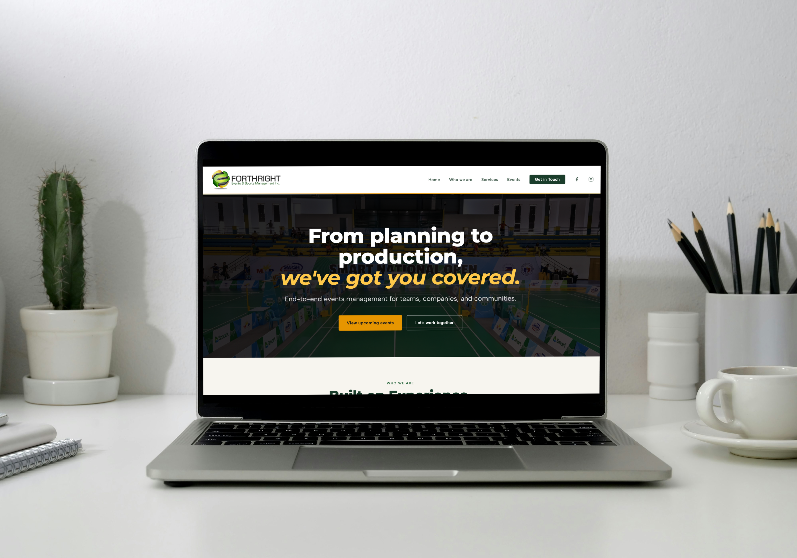
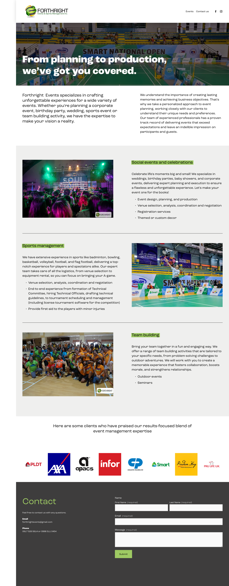
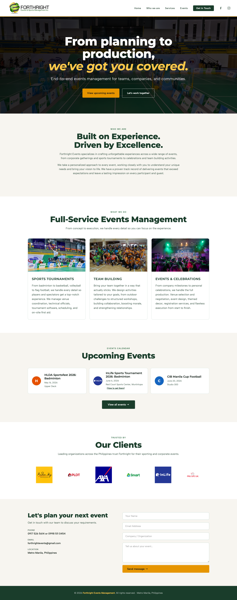
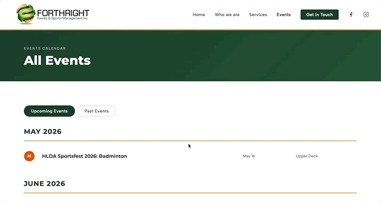
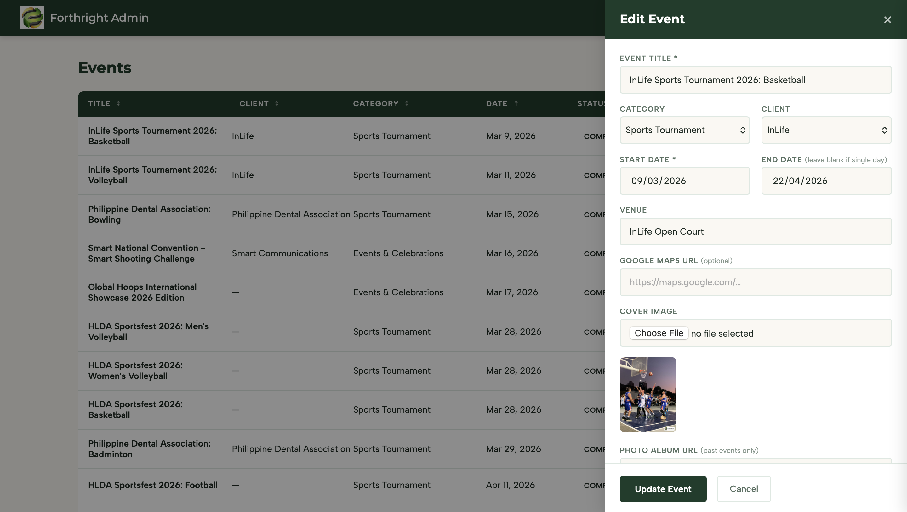

Designing and building a custom events website and admin CMS for a Philippines-based sports and events company, replacing a €160/year Squarespace subscription with a purpose-built solution that costs almost nothing to run.

The Problem
Forthright Events was running their website on Squarespace at €132 + taxes per year (nearly PHP 10,000). Beyond the cost, the platform was working against the business rather than for it.
The site was constrained by what Squarespace's templates allowed. Any design decision outside the template structure required workarounds or was simply not possible.
The upcoming and past events sections were manually updated every time something changed. Past events were moved by hand — nothing happened automatically. There was no structured data, no admin interface, just text and images edited directly on the page.
There was no way to associate an event with a client, no visibility into the business relationship over time, and no rolling archive of past work. When an event ended, the record of it largely disappeared.
I built something that's tailored to how the business actually works, and make it affordable to run long-term.

Before: The original Squarespace site, restricted to templates

After: Purpose-built, fully managed through a custom CMS
Approach
Rather than reaching for a CMS template, I started with what the business actually needed to manage: events with dates, venues, cover images, and photo albums; a client list with logos; and a public-facing site that reflected the brand.
I used Claude as a development partner throughout, not to generate the whole thing, but as a collaborative tool for working through architecture decisions, debugging, and iterating quickly. All code was reviewed, edited, and adjusted in Visual Studio Code, giving me direct control over every decision. This approach let me move at a pace that wouldn't have been possible working alone, while still understanding and owning every part of the codebase.
Information Architecture
The project has two distinct surfaces:
A homepage with an upcoming events preview, a full events page with upcoming events grouped by month and past events in a photo card grid, and a contact form.
A secured CMS where the client can add and manage events (with cover image upload, venue, date range, client association, and photo album link), manage their client list with logos, and control which clients are featured on the homepage. A slide-out drawer keeps the admin in context while editing, eliminating page jumps or scroll hunting.

Upcoming events are grouped by month and past events are displayed in a photo card grid

Admin panel — Events table with sortable columns and slide-out drawer for adding and editing events
Key Design Decisions
Events are associated with a client and not just standalone records. This means the admin can see how many events each client has had, building a record of the business relationship over time.
Upcoming events are shown as a clean list grouped by month, making it easy for people to see what's ahead. Past events use a photo card grid, where the cover image, Facebook album link, and client logo come together to tell the story of each event. The split happens automatically based on date, no more manual intervention needed.
The Facebook album URL field is hidden in the admin form until the event date has passed. A small detail, but it removes confusion and keeps the form focused on what's relevant at the time.
Rather than requiring the client to host images elsewhere and paste URLs, cover images and client logos upload directly from the admin panel to Supabase Storage. One step instead of three.
Outcome
Built from scratch in HTML and CSS — no template constraints, no layout restrictions. Every design decision is intentional and editable.
Events, clients, logos, venues, and photo albums are all managed from a purpose-built admin panel. The public site updates instantly — no page editing, no copy-pasting, no manual publishing steps.
Past events are automatically archived with cover images, client associations, and photo album links — a permanent, growing record of what the business has delivered.
GitHub Pages hosting is free. The custom domain costs approximately €12/year. Total running cost is over 90% less than the Squarespace subscription it replaced.